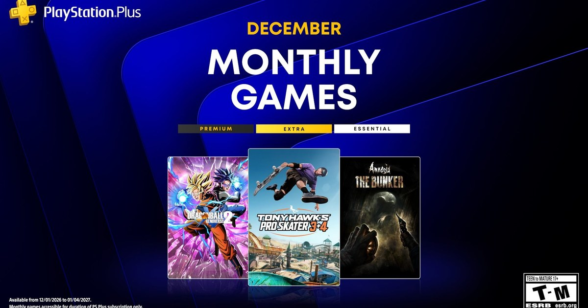

December's PS Plus games are Tony Hawk's Pro Skater 3+4, Dragon Ball Xenoverse 2, and Amnesia: The Bunker
PlayStation revealed December's PlayStation Plus Monthly Games on November 25: Tony Hawk's Pro Skater 3+4, Dragon Ball Xenoverse 2, and Amnesia: The Bunker, claimable from Tuesday, December 1 through January 4.

PlayStation revealed December's PlayStation Plus Monthly Games on November 25, and the final trio of the year covers three very different moods: Tony Hawk's Pro Skater 3+4, Dragon Ball Xenoverse 2, and Amnesia: The Bunker. All three are claimable by every Plus member, at every tier, from Tuesday, December 1 through Monday, January 4 — a longer window than usual, stretching past New Year's.
The headliner is the Tony Hawk remake. Pro Skater 3+4 rebuilds the 2001 and 2002 originals in 4K with more skaters, new parks, and the classic two-minute format, plus expanded Create-A-Skater and Create-A-Park modes that let players build custom goals to share for the first time. The Cross-Gen Edition covers PS5 and PS4.
The full December lineup
Tony Hawk's Pro Skater 3+4 – Cross-Gen Edition (PS5, PS4). The remake of two early-2000s classics, rebuilt with more skaters, new parks, gnarlier tricks, and the soundtrack you'd expect. The PS5 version runs native 4K at 60 frames per second in Fidelity Mode.
Dragon Ball Xenoverse 2 (PS5, PS4). Create your own character, explore Conton City, and train under iconic characters from the series to rescue the flow of history. Online multiplayer includes battles against other players and Raid Battles against gigantic foes.
Amnesia: The Bunker (PS4). The survival-horror entry from the makers of Soma drops you alone in a desolate World War I bunker as French soldier Henri Clément, armed with a revolver, a noisy dynamo flashlight, and one bullet in the barrel. A creature hunts you and reacts to every move and sound you make, and the bunker's randomization means no two playthroughs unfold the same way.
Last call for November's games
November's trio — Dead Island 2, Tomb Raider IV–VI Remastered, and Monster Train 2 — leaves the claim list after Monday, November 30. If any of those are still unclaimed, that's the deadline. Sony has also already confirmed Dynasty Warriors: Origins is headed to the Extra and Premium catalog in December, with the rest of that month's catalog additions expected to be revealed on December 9.
Sources: PlayStation Plus Monthly Games for December: Tony Hawk's Pro Skater 3+4, Dragon Ball Xenoverse 2, Amnesia: The Bunker (PlayStation Blog) · PlayStation Plus Free Games For December 2026 Revealed (GameSpot) · PlayStation Plus December 2026 Free Games Lineup Officially Revealed (Polygon) · PlayStation Plus Monthly Games lineup for December 2026 announced (Gematsu)
Gear up: Razer — mice, keyboards, headsets and laptops.